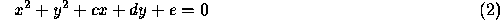
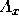
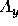
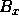
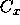
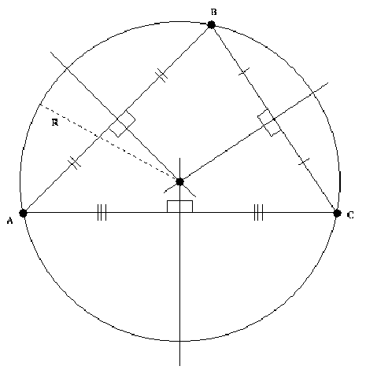

| Circle Through Three Points |
Your team is to write a program that, given the Cartesian coordinates of three points on a plane, will find the equation of the circle through them all. The three points will not be on a straight line.
The solution is to be printed as an equation of the form
and an equation of the form

Each line of input to your program will contain the x and y coordinates of three points, in the order  ,  ,  , ,  , . These coordinates will be real numbers separated from each other by one or more spaces.

Your program must print the required equations on two lines using the format given in the sample below. Your computed values for h, k, r, c, d, and e in Equations 1 and 2 above are to be printed with three digits after the decimal point. Plus and minus signs in the equations should be changed as needed to avoid multiple signs before a number. Plus, minus, and equal signs must be separated from the adjacent characters by a single space on each side. No other spaces are to appear in the equations. Print a single blank line after each equation pair.
7.0 -5.0 -1.0 1.0 0.0 -6.0 1.0 7.0 8.0 6.0 7.0 -2.0
(x - 3.000)^2 + (y + 2.000)^2 = 5.000^2 x^2 + y^2 - 6.000x + 4.000y - 12.000 = 0 (x - 3.921)^2 + (y - 2.447)^2 = 5.409^2 x^2 + y^2 - 7.842x - 4.895y - 7.895 = 0